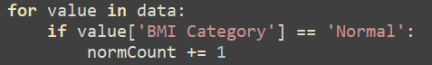
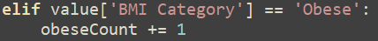
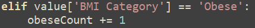
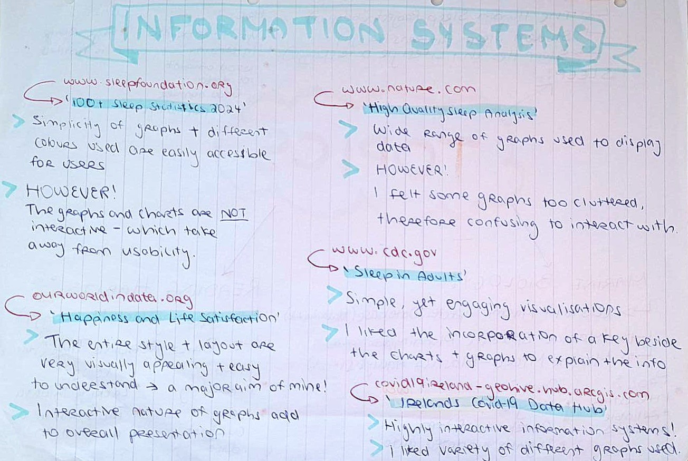
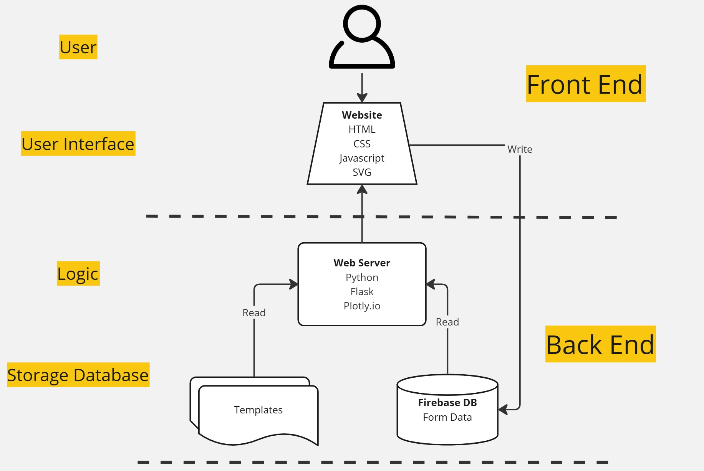
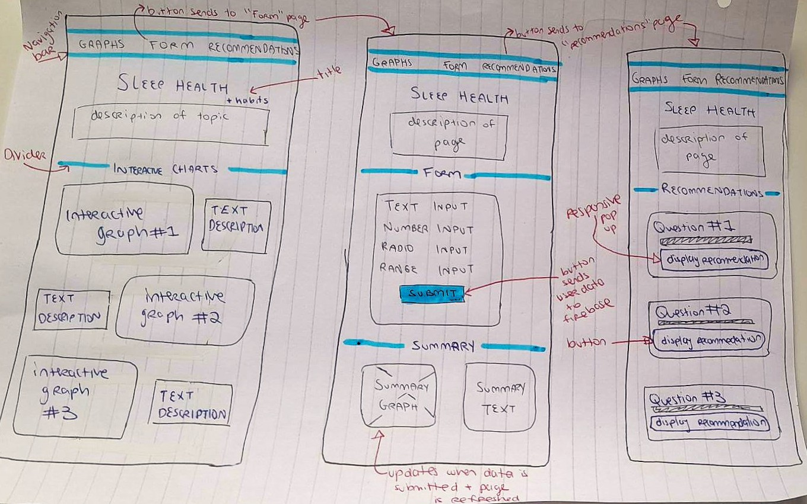
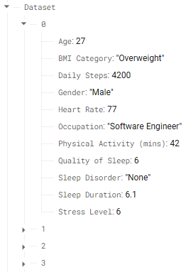
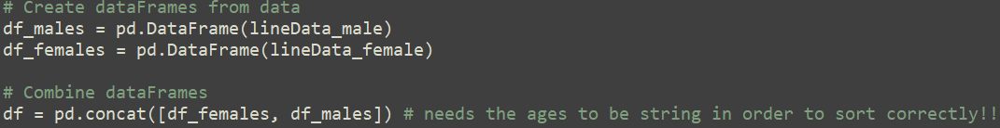
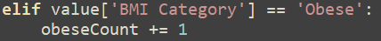
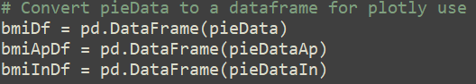

- If sleep disorder is sleep apnea, add 1 to sleep apnea normal count.
- If sleep disorder is insomnia, add 1 to insomnia normal count. 
 

This is my video which demonstrates my artefact in operation.
As a starting point, I researched datasets using Kaggle.com and data.gov.ie provided in the brief. During my investigation of different topics to analyse, I was initially drawn to a select few datasets, including:

I have an interest in marine biology and thought this could be an interesting topic to explore. I believe in understanding the ocean and its organisms we create an awareness of conservation and the importance of our environment. I found a few reliable datasets related to this topic. However, after my initial investigation of each, I quickly realised how complex these topics would be. Firstly, the data given was rather complicated to understand, making it difficult to create visual representations. I almost felt there was an overload of information to process. In addition to this, I realised the data was slightly outdated and I felt I needed more current information to fit the brief.
I then became interested in the idea of books and reading, and I explored the different datasets which were relevant. I settled on a rather simple dataset which investigated 'Reading Habits'. Given age, gender, book genre, reading time and how their books affected their mood, I could analyse the true effect of reading on society. While I admit this is an interesting topic which undoubtedly intrigued me, I found it lacking in information. I felt the data wasn't sufficient, the idea of a dataset relating to habits was still something I was interested in.
Finally, I settled on the topic of Sleep Health. I chose this topic because I believe our sleep health is highly relevant and important to be aware of. I am interested in finding solutions to maximise our sleep quality and experience. The dataset I found had apt information and fit the brief. My information system would aim to provide evidence of how different aspects of our lives affect our sleep. Including: occupation, daily exercise and steps, even one's gender. I want to convey that sleep plays a vital role in our lives, dictating many aspects of life which might seem unrelated. This could encourage certain habits among young people while shedding light on the impact of our habits and lifestyle in relation to our sleep.
My information system can be useful to young people deciding on a career and evaluating future lifestyle choices, yet also valuable to older adults who want to better understand the impact of their daily activities on their sleep and vice versa. The age range of my data is [27 to 59 years].
The image below shows some of the websites and information systems I was inspired by during my research, alongside their pros and cons:
I chose to explore the effect of our habits and lifestyle on our sleep and vice versa, to gain a better understanding of these vital connections and help inform users. My project will target people of any age between 16 to 60, who are interested in health, lifestyle habits and sleep. I will use the agile software development method to develop my project.
My interactive information system will meet both the basic and advanced requirements of the brief.
My
information system:
Because my survey form collects user data, including name, age, gender, activity and sleep levels. I am conscious of the ethical questions which may arise, so I never display real names in my summary of user feedback. Furthermore, this particular dataset may not be entirely accurate. Hence, the website does not give medical advice. This should be a noted disclaimer.
I am using Python, HTML, CSS, JavaScript, Visual Studio and Thonny for this project.
I will be using OBSstudio to record my video and KDENlive for the editing portion.
Here is an Architecture Diagram which shows the interaction between the different components of my system:
Here is a wireframe drawing of my design plan for the website:
Data cleaning flowchart
Flowchart for processing data and generating graphs
Flask website flowchart
During my project I carried out a lot of
unit testing and white-box testing.
I also had my classmates carry out some black-box testing on the finished project to ensure that it was working
properly.
Below is a test table of some of the tests I carried out on the user survey:
| Input Field | Test Description | Test Data (input) | Expected Outcome | Actual Outcome | Status |
|---|---|---|---|---|---|
| Name input | Accept first name and surname | Heather Casey | Data accepted | Data accepted | ✔️ |
| Name input | Accept surname with apostrophes | Liam O'Loinsigh | Data accepted | Data accepted | ✔️ |
| Name input | Accept name with dash | Amy-Rose | Data accepted | Data accepted | ✔️ |
| Name input | Accept name with fada | Seán | Data accepted | Data accepted | ✔️ |
| Name Input | Reject special charachters | Davy! | Data rejected | Data rejected | ✔️ |
| Name Input | Reject numbers | alex45 | Data rejected | Data rejected | ✔️ |
| Name Input | Reject empty input | Data rejected | Data rejected | ✔️ | |
| Age |
Reject age above 125 years | 222 | Data rejected | Data rejected | ✔️ |
| Age Input | Accept ages in range 1-125 years | 17 | Data accepted | Data accepted | ✔️ |
| Age Input | Reject age less than 1 year | 0 | Data rejected | Data rejected | ✔️ |
| Age Input | Reject empty input | Data rejected | Data rejected | ✔️ | |
| Sleep Hours Input | Accept hours in range 1-23 hours | 7 | Data accepted | Data accepted | ✔️ |
| Sleep Hours Input | Reject hours less than 1 hour | 0 | Data rejected | Data rejected | ✔️ |
| Sleep Hours Input | Reject hours over 23 hours | 24 | Data rejected | Data rejected | ✔️ |
| Sleep Hours Input | Reject empty input | Data rejected | Data rejected | ✔️ | |
| Exercise Input | Input only allows range of 0-180 minutes | 30 | Data accepted | Data accepted | ✔️ |
When working on my Form I faced a few issues concerning input validation:
I created a line chart to display sleep quality based on age and separated by gender. My function takes in my dataset from the Firebase DB, which is in list format. Each entry is a dictionary:
I create two dictionaries (one for each gender) to store age and sleep quality.
I then add these two lists to a dictionary and using pandas I convert the dictionary to a dataframe which is used by Plotly. Since I am separating my data by gender, I have two dataframes. I use pandas to combine these two dataframes with pd.concat. Plotly can then generate the line chart as a html file to my local disk.
START SET female_dictionary SET male_dictionary FOR each entry in the dataset SET age, sleep_quality and gender IF gender is 'Female' THEN IF age NOT already in female_dictionary THEN SET age as key and create list value with sleep_quality as first item in list ELSE APPEND sleep_quality value to list under age key END IF ELSE IF gender is 'Male' THEN IF age NOT already in male_dictionary THEN SET age as key and create list value with sleep_quality as first item in list ELSE APPEND sleep_quality value to list under age key END IF END IF END FOR SET female_ages_list SET female_sleep_quality_list FOR each age key in the SORTED female_dictionary SET value list to quality SET average as SUM of quality DIVIDED by LENGTH of quality APPEND age to female_ages_list APPEND average to female_sleep_quality list END FOR SET male_ages_list SET male_sleep_quality_list FOR each age key in the SORTED male_dictionary SET value list to quality SET average as SUM of quality DIVIDED by LENGTH of quality APPEND age to male_ages_list APPEND average to male_sleep_quality list END FOR END
I created three pie charts which calculate the percentage of people under each BMI category: Normal, Overweight and Obese. One displays the overall BMIs, the other two explore the possible correlations of BMI and sleep disorders.

I use pandas to convert these dictionaries to dataframes for Plotly.
The percentages are automatically calculated by Plotly when rendering the pie charts. I generated these pie charts as SVG files on my local disk.
START SET normal_count to 0 SET overweight_count to 0 SET obese_count to 0 FOR each entry in the dataset IF 'BMI Category' is equal to 'Normal' THEN ADD 1 to normal_count ELSE IF 'BMI Category' is equal to 'Overweight' THEN ADD 1 to normal_count ELSE IF 'BMI Category' is equal to 'Obese' THEN ADD 1 to obese_count ELSE PRINT warning END IF END FOR END
A bar chart of average hours of sleep under each age. First, I initialise a dictionary where I will store all values of sleep hours and all ages.
These two bar charts were interesting. I only had to prepare the data while Plotly handled the algorithms for me. They are grouped bar charts and show all BMI values under each occupation. Both grouped by occupation and one displays a count of people, while the other displays a percentage value.
The main challenge for this was reading the Plotly documentation and finding which one suited the visualisation I was looking for: the grouped x-axis values.
START SET get_data dictionary FOR each entry in the dataset SET age as STRING 'Age' value IF age NOT already in get_data THEN SET age as key and create list value with 'Sleep Duration' as first item in list ELSE APPEND 'Sleep Duration' value to list under age key END IF END FOR SET ages_list SET sleep_list FOR each age key in the SORTED get_data dictionary SET value list to sleep_hours SET average as SUM of sleep_hours DIVIDED by LENGTH of sleep_hours APPEND age to ages_list APPEND average to sleep_list END FOR END
My final artefact meets both the basic and advanced requirements set out in the brief.
If I had more time, I would add the following features:
| Section | Word Count |
|---|---|
| 1) Meeting the brief | 10 |
| 2) Investigation | 442 |
| 3) Plan and design | 325 |
| 4) Create | 1,168 |
| 5) Evaluation | 361 |
| Total: | 2,306 |